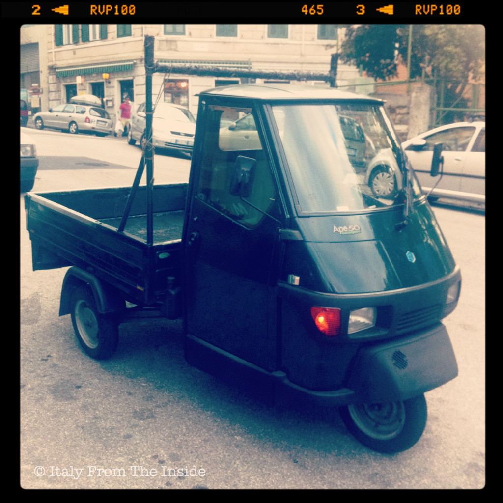

It is small, not too fast and it buzzes around. Yes, it is the ape (bee) but also the Ape (Piaggio), the Italian truck by definition. Born in 1948 with the goal of providing an inexpensive mean of freight transportation to help Italians during the economical reconstruction of the post-war years, today it has become an icon. Tireless, it still buzzes around on the Italians roads.